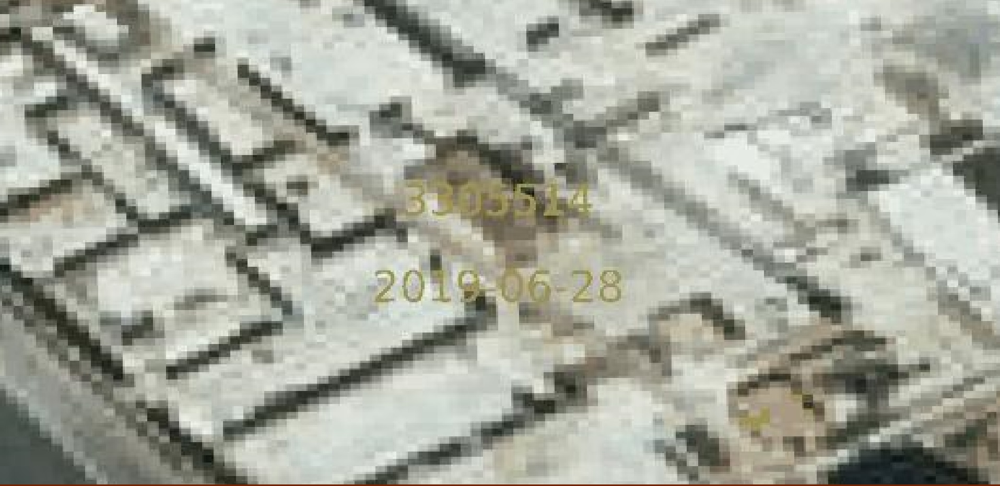
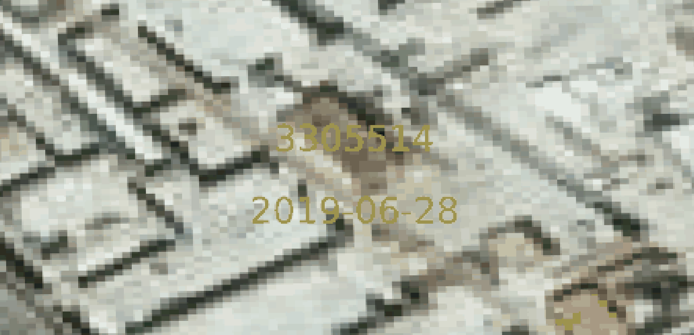
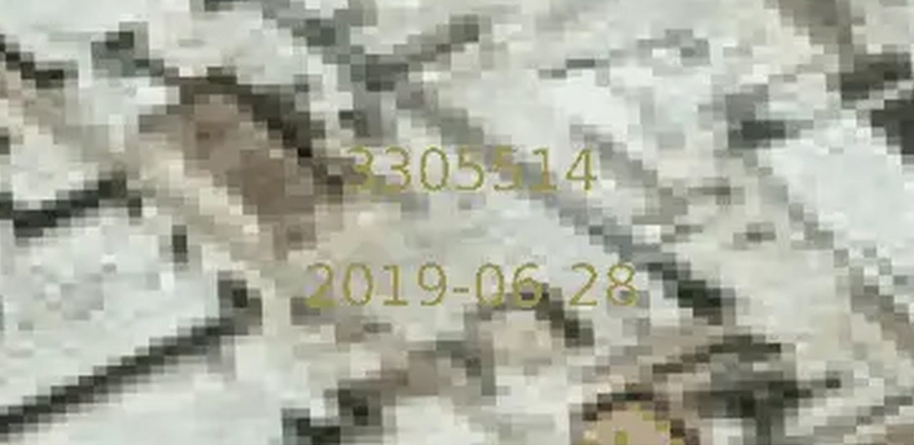
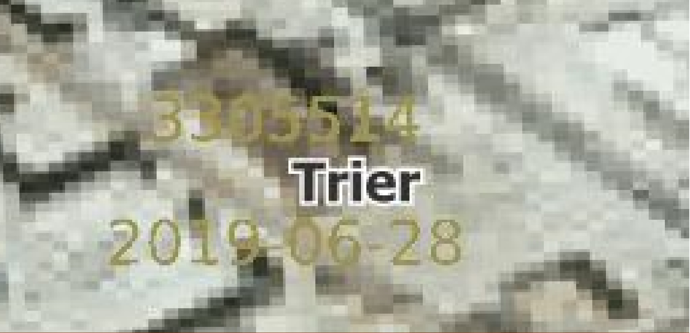
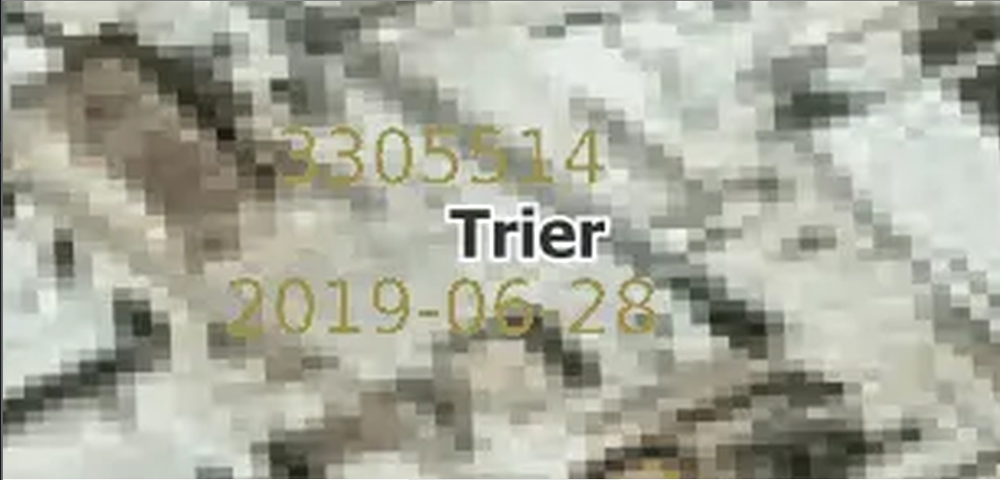

Rastergraphiken
Alle geringauflösenden Abbildungen wurden mit einer Auflösung von 1:240 aufgenommen und mit 125dpi im jeweiligen Format exportiert.
Alle hochauflösenden Abbildungen wurden mithilfe eines Photoviewers zur Veranschaulichung erstellt. Die Auflösung kann sich dadurch leicht unterscheiden.
| JPEG | PNG | WEBP | |
|---|---|---|---|
| Dateigröße | 199 KB | 680 KB | 109 KB |
| Lesbarkeit | Bis zu einer Auflösung von ca. 1:100 erscheint die Detailgenauigkeit bei allen drei Formaten gleich. Wird die Auflösung weiter erhöht, entstehen folgende Unterschiede: | ||
|

Grenzen zwischen Pixeln verschwimmen durch einen Unschärfeeffekt. Trotzdem noch lesbar, mittlere Bildqualität. |

Grenzen klar abgegrenzt, scharfe Pixel und Vektorelemente. Beste Bildqualität. |

Im Vergleich sehr unscharfes Bild. Schlechteste Bildqualität. |
|
| Bewertung | Bei einer geringen Auflösung ist das Format WEBP zu empfehlen, da hier die Bildqualität nicht eingeschränkt wird und die Dateigröße sehr webfreundlich ist. Werden aber kleine Auflösungen benutzt, empfiehlt sich bei geringen Dateigrößen das PNG-Format, ansonsten das JP(E)G-Format. | ||
| JPEG | PNG | WEBP | |
|---|---|---|---|

|
|||
| Dateigröße | 216 KB | 757 KB | 123 KB |
| Lesbarkeit | Bis zu einer Auflösung von ca. 1:100 erscheint die Detailgenauigkeit bei allen drei Formaten gleich. Wird die Auflösung weiter erhöht, entstehen folgende Unterschiede: | ||
|

Grenzen zwischen Pixeln verschwimmen durch einen Unschärfeeffekt. Trotzdem noch lesbar, mittlere Bildqualität. |
Grenzen klar abgegrenzt, scharfe Pixel und Vektorelemente. Beste Bildqualität. |

Im Vergleich sehr unscharfes Bild. Schlechteste Bildqualität. |
|
| Bewertung | Bei einer geringen Auflösung ist das Format WEBP zu empfehlen, da hier die Bildqualität nicht eingeschränkt wird und die Dateigröße sehr webfreundlich ist. Werden aber kleine Auflösungen benutzt, empfiehlt sich bei geringen Dateigrößen das PNG-Format, ansonsten das JP(E)G-Format.
Zudem ist hier auffällig, dass allein durch Zuschalten der Vektorebene die Bilder größer werden. Darauf sollte also beim exportieren geachtet werden: unnötige Bildelemente ausblenden. |
||